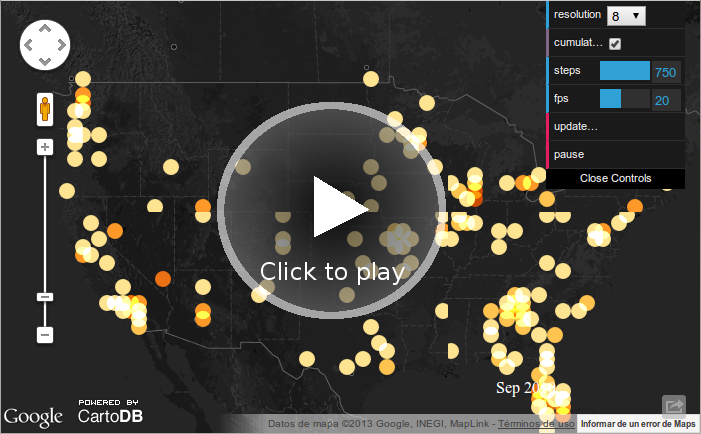

The Financial crisis of 2007–2012 led to the failure of a number of banks in the United States. Twenty-five banks failed and were taken over by the Federal Deposit Insurance Corporation (FDIC) in 2008, while 140 failed in 2009, 157 in 2010 and 92 in 2011.
Souce: Wikipedia
453 Bank failures by July 2012 are visualized here.
Interactive visualization
- See thefullscreen map and data.
- Sizes of bubbles marks value of bank's assets before being acquisited by a third.
- Bank's assets are expressed in million of US$.
- Colors marks date of acquisition: 2008 - black, 2009 - red, 2010 - green, 2011 - blue, 2012 - orange.
- Use the search box to focus on details of an US city or state.
Through time animation
- Use the controls window for pausing, setting bubble sizes, etc.
Bank acquisitions
- Sizes of bubbles marks value of bank's assets before being acquisited by a third.
- Yellow bubbles for banks acquired.
- Blue bubbles for acquiring banks.
Top 10 US bank failures acquisitions (2008-2012)
Top 10 US States bank failures by assets (2008-2012)
Technical information
Project site at GitHub: http://github.com/fontanon/us_bank_failures
Proudly produced with CartoDB, CartoDB Torque Engine and Google Fusion Tables.
Sources of data and inspiration
- List of bank failures in the United States. Original source of data at Wikipedia.
- FDIC's Failed Bank List.
- Failed Banks Tracker, a collective harvesting of data by OpenEconomics group at Open Knowledge Foundation.